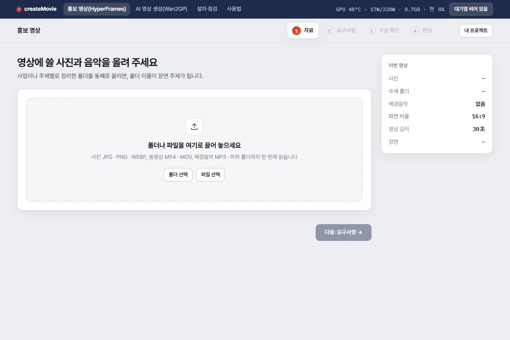
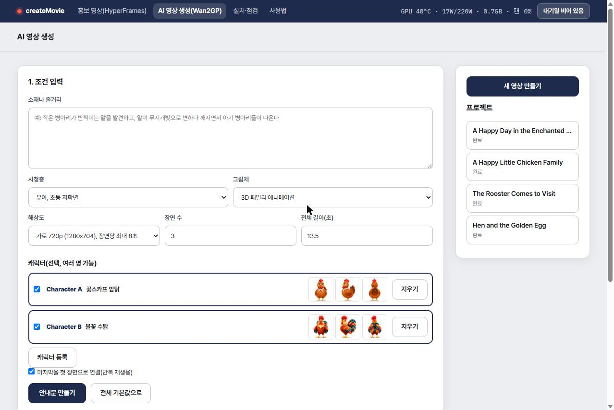
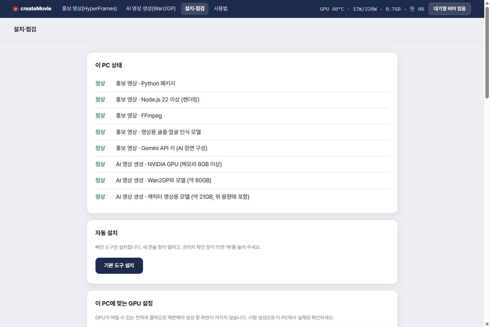

사진으로 만드는 홍보 영상과, 이 PC의 GPU로 만드는 AI 영상을 한 화면에서 만드는 서비스입니다.
2026년 11월 1일 기준
상단 메뉴에서 기능을 고릅니다. 어느 화면에서든 메뉴 오른쪽에 GPU 상태와 대기열이 보입니다.
| 메뉴 | 하는 일 | 필요한 것 |
|---|---|---|
| 홍보 영상(HyperFrames) | 사진·동영상·음악을 올리면 AI가 장면을 구성하고 MP4로 만듭니다. | Gemini API 키. GPU는 없어도 됩니다. |
| AI 영상 생성(Wan2GP) | 스크립트와 캐릭터 이미지로 영상을 새로 생성합니다. | NVIDIA GPU 메모리 8GB 이상, 디스크 약 80GB, 서버가 실행 중인 PC에서만 사용 |
| 설치·점검 | 도구 상태 확인, 자동 설치, GPU 설정, 저장 폴더와 저장 공간을 관리합니다. | - |
| 사용법 | 이 설명서를 봅니다. | - |
setup.bat을 더블클릭합니다.바탕화면의 createMovie 바로가기나 start.bat을 실행하면 http://localhost:5000이 열립니다.
.env에 HOST=0.0.0.0을 넣습니다. 이때도 AI 영상 생성과 대기열 조작은 서버가 실행 중인 PC에서만 됩니다. NAS와 PC 렌더 워커 구성은 README를 보세요.화면 위쪽의 네 단계를 차례로 진행합니다. 작업은 프로젝트로 저장되고, 내 프로젝트에서 다시 열 수 있습니다.

렌더링은 대기열에 들어가 차례대로 진행됩니다. 끝나면 MP4 내려받기나 저장 폴더로 복사로 받습니다. 고치려면 구성 다시 고치기를 누릅니다.

versions 폴더에 보관됩니다.| 해상도 | 장면당 최대 | 이 시스템의 시험 기록 (RTX 3070 Ti 8GB, 220W) |
|---|---|---|
| 세로·가로 480p | 10초 | 약 4.5초 장면에 약 5분 |
| 세로·가로 720p | 8초 | 약 4.5초 장면에 약 9~12분 |
한 영상은 최대 12장면, 90초입니다. 장면을 나눠 만들고 앞 장면의 마지막 프레임에서 다음 장면을 이어 갑니다. 다른 PC에서는 시간이 다릅니다.
3D, 클레이, 2D 셀, 2D TV 만화, 2D 극장판, 2D 동화책, 일본 애니메이션풍, 실사 영화풍을 제공합니다. 직접 입력할 때는 영어로 쓰세요.
직접 만든 캐릭터 이미지를 등록하면 장면이 바뀌어도 생김새를 유지하며 생성합니다. 캐릭터 영상용 모델(약 21GB)이 필요합니다.
A round plump cartoon hen with red-brown layered feathers, bright red comb, big brown eyes with lashes, yellow beak and legs, and a cream floral scarf.
손으로 스크립트를 고칠 때는 이렇게 적습니다.
Character A waddles in from the left and stops on the left of the frame, while Character B stays on the right and turns to face her.
홍보 영상 렌더와 AI 영상 생성은 한 대기열에서 넣은 순서대로 하나씩 처리되어 겹치지 않습니다. 메뉴 오른쪽의 대기열 버튼을 눌러 목록을 엽니다.
| 조작 | 설명 |
|---|---|
| ▲ ▼ | 기다리는 작업의 순서를 바꿉니다. |
| 빼기 | 대기열에서 뺍니다. 프로젝트는 남습니다. |
| 멈추기 | 두 번 누르면 지금 작업을 멈추고 대기열도 멈춥니다. |
| 재개 | 멈춘 대기열을 다시 돌립니다. 완료된 장면은 건너뜁니다. |
스크립트 자체의 실패는 건너뛰고 다음으로 넘어갑니다. GPU·과열·디스크 문제와 프로그램 재시작 때는 대기열이 멈추며, 확인한 뒤 재개를 눌러야 합니다.
메뉴에 온도, 전력(현재/제한), 메모리, 팬 속도가 항상 표시됩니다.
| 온도 | 동작 |
|---|---|
| 90°C 도달 | 생성을 잠시 얼려 식힙니다. 85°C에서 이어 가므로 진행분을 잃지 않고 느려지기만 합니다. |
| 93°C 연속 도달 | 생성을 중단합니다. 식은 뒤 이어서 생성을 누르세요. 진행 중이던 장면은 다시 만듭니다. |

| 영역 | 쓰는 법 |
|---|---|
| 이 PC 상태 | 도구별 정상·없음과 해결 방법을 보여 줍니다. |
| 자동 설치 | 빠진 도구만 설치합니다. 콘솔 창과 관리자 확인 창이 뜰 수 있습니다. |
| GPU 설정 | 카드에 맞는 권장 전력과 클럭을 보여 줍니다. 적용 뒤 시험 생성 시작으로 이 PC에서 실제로 확인합니다. 결과에 최고 온도와 다음에 시도할 전력값이 나옵니다. |
| 완성 영상 저장 폴더 | 저장 폴더로 복사의 위치입니다. 기본값은 사용자의 동영상 폴더이고, 바꾸면 기억합니다. 파일은 01_제목.mp4 형식이며 덮어쓰지 않습니다. |
| 저장 공간 | 프로젝트별 용량을 보고 지웁니다. 중간 파일 정리는 AI 영상의 이전 버전과 임시 폴더만 지웁니다. |
| 증상 | 해결 |
|---|---|
| AI 영상 화면이 사용 불가로 나옴 | 안내된 이유를 확인하세요. GPU 메모리 8GB 미만이면 쓸 수 없고, 도구가 없으면 설치·점검에서 설치합니다. 다른 기기에서 접속했다면 서버가 실행 중인 PC에서 여세요. |
| 검사에서 JSON 오류 | LLM 답변의 {부터 }까지 전체를 붙여 넣으세요. 안 되면 LLM에게 "JSON만 다시 출력해줘"라고 요청합니다. |
| "Character C는 고른 캐릭터에 없습니다" | 고른 캐릭터 수에 맞게 스크립트를 고치거나 캐릭터를 더 체크하세요. |
| "캐릭터 영상용 모델이 없습니다" | python tools/setup_h3.py를 실행해 약 21GB를 받으세요. |
| 생성 중 화면이 꺼지거나 드라이버 오류 | 재부팅한 뒤 이어서 생성을 누르세요. 반복되면 설치·점검에서 전력을 낮춰 시험하세요. |
| 대기열이 멈춤 | 대기열 목록의 이유를 확인하고 재개를 누르세요. |
| "다른 탭이나 기기에서 이 프로젝트가 바뀌어…" 안내 | 다른 탭에서 저장된 내용이 있습니다. 홍보 영상은 최신 내용 불러오기와 덮어쓰기 중에 고르고, AI 영상은 새로고침한 뒤 다시 저장하세요. |
| 홍보 영상 구성이 안 만들어짐 | 설치·점검에서 Gemini API 키를 확인하세요. 사용량 한도라면 .env에 키를 더 넣을 수 있습니다(GEMINI_API_KEY_2). |